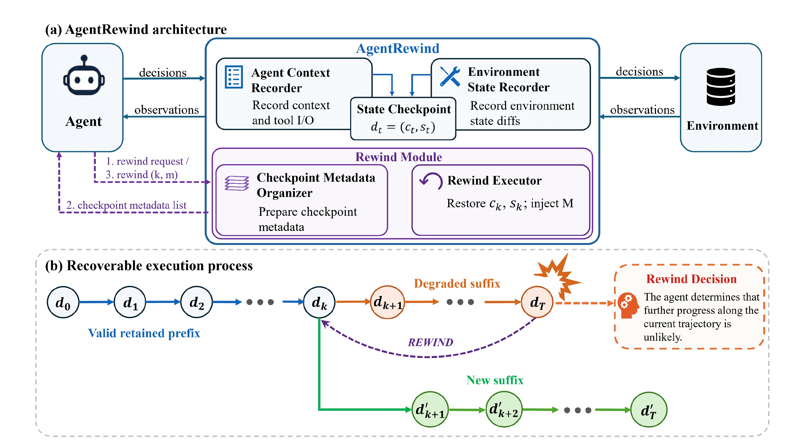
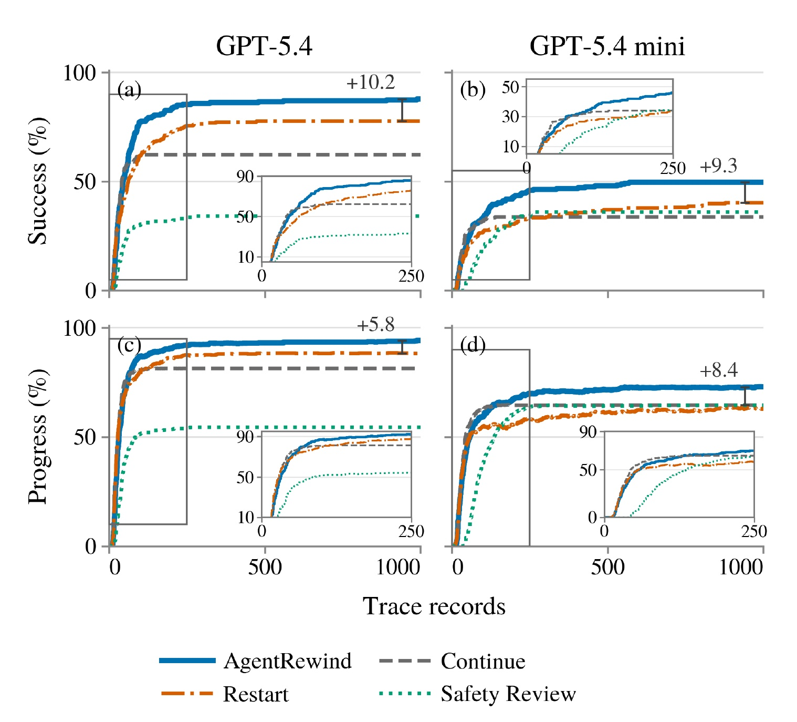
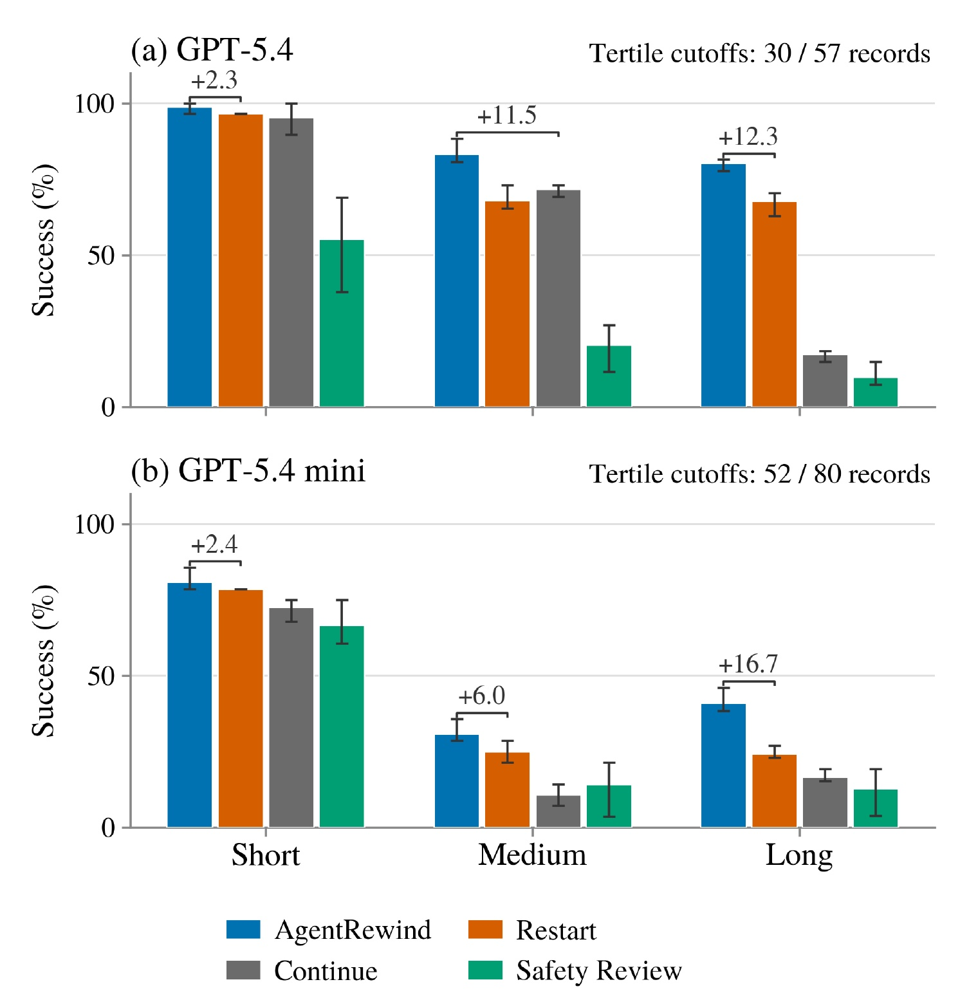
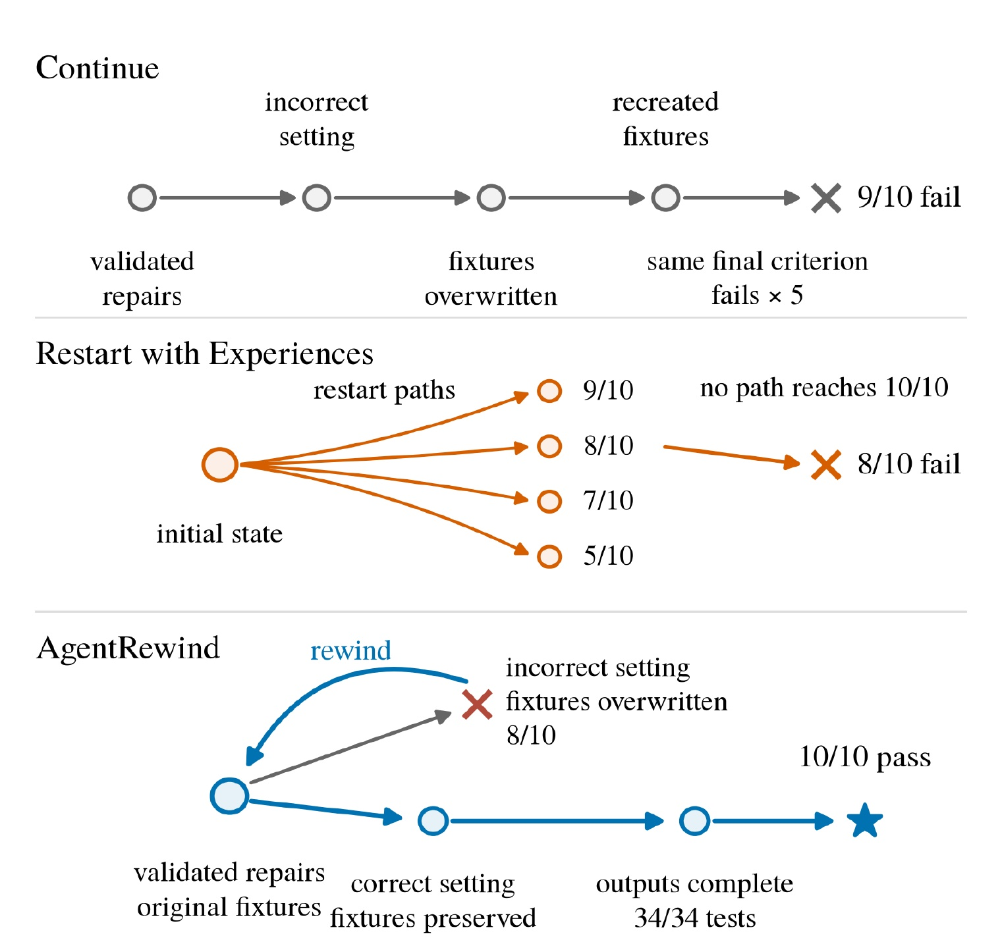
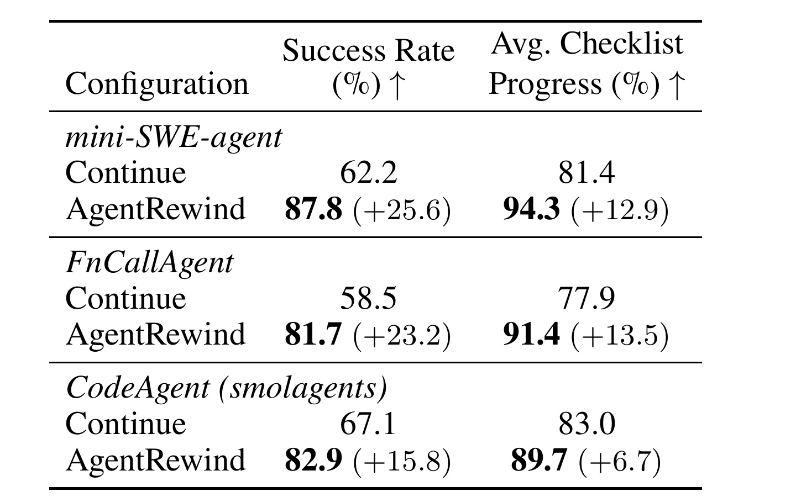
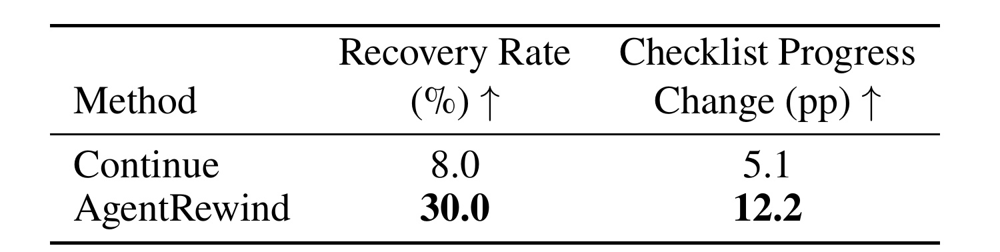
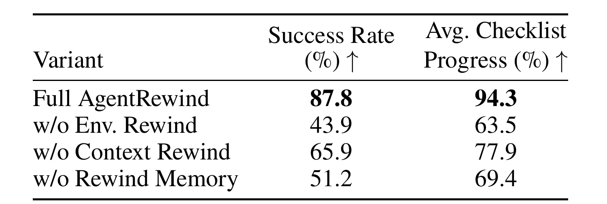

AgentRewind：面向长程 LLM Agent 的可恢复执行
论文：AgentRewind: Recoverable Execution for Long-Horizon LLM Agents
作者：Yu Zhuang, Kefei Chen, Yitong Duan, Shuxin Zheng, Jian Li, Xu-Yao Zhang
第一作者主要机构：中国科学院大学；合作机构包括清华大学交叉信息研究院、中关村学院、中国科学院自动化研究所
公开时间：2026-08-14（arXiv v1；2026-08-17 进入当日检索窗口）
论文入口：arXiv:2608.14380
开源状态：AgentRewind recorder 与 MettleBench 均已核验可访问
AgentRewind 关注的不是如何让 Agent 第一次就不犯错，而是错误已经进入长程执行之后，如何把“继续运行”从一条不可逆的单向链改造成可恢复、可分叉的过程。系统在 LLM 决策边界同时记录上下文与受控工作区，把两者组成对齐检查点；当前路线陷入停滞时，Agent 可选择较早检查点，恢复上下文和文件系统，并携带上一次尝试中得到的失败经验重新生成后缀。论文还提出 MettleBench，以一组有先后依赖的验收标准衡量工程任务的完整成功和部分进度。
1. 背景和问题
在长程任务中，早期错误会同时沿 Agent 上下文和环境状态传播；一旦关键文件被删、配置被污染或错误计划持续推进，后续动作往往无法只靠继续向前来真正逆转这些影响，而现有方法多在事前改计划或做安全检查，对错误已经发生后的恢复支持不足。
长程 Agent 与普通的一问一答模型有一个根本差异：每次输出不仅增加文本历史，还可能借助工具改变外部世界。一个错误命令会生成错误观察，错误观察又会进入下一轮上下文；与此同时，文件、配置、数据库或仓库历史已经发生改变。因而失败不是单一的“推理错误”，而是上下文状态与环境状态之间相互强化的耦合错误。计划修订、树搜索和动作安全检查可以降低错误进入轨迹的概率，Reflexion 一类方法也能把一次完整尝试的经验带给下一次尝试，但这些路线并不直接回答：若当前任务已有一段正确成果，怎样只放弃有问题的后缀，并让 Agent 从一致的历史状态继续。
论文把已有回滚思路分成几个层次。浏览器导航或结构化工具流的回滚通常依赖显式语义边界；进程级 checkpoint/restore 能恢复低层运行状态，却不理解 Agent 的对话上下文和失败经验；全量重启虽然能得到干净环境，却会丢失已经完成且验证通过的工作。AgentRewind 的定位是介于 Agent 与环境之间的运行时恢复层：它既不要求重新训练基座模型，也不把恢复限制在某个固定 harness，而是把上下文记录、工作区记录、选点和记忆注入连成一次可操作的恢复过程。
为了让“长程”和“部分完成”可以测量，作者构造了 MettleBench。一个任务写成
其中，(x) 是自然语言任务说明，(s_0) 是初始环境，(mathcal{U}) 是 Agent 的动作空间，(G) 是按顺序排列的验收标准，(g_i:S\rightarrow{0,1}) 判断环境状态是否满足第 (i) 项。这里的“有序”不是排版选择：后续要求可能依赖前一步产生的摘要、标识符或文件，也可能反过来破坏先前已经满足的标准。完整成功要求最终状态同时满足所有标准：
(s_T) 表示终止时环境，逻辑合取意味着缺一项都算任务未完成。为了区分“全失败”和“差最后一步”，作者再定义 (ell) 为从第一项开始连续满足的最长前缀长度，并用
表示 checklist prefix progress。(n) 是标准总数，( ho) 只承认连续前缀，而不是把零散通过项相加；这样可以惩罚绕过依赖关系的表面进展。MettleBench 最终包含来自五个工程基准的 82 个任务、640 条标准，每个任务 5--12 条，平均 7.80 条、中位数 7 条。每项任务都配有可一次前向完成的参考解，因此基准并未强迫参测方法使用回滚；恢复机制的价值应由与 Continue 等策略的差异来证明，而不是由任务设计预设。
这一问题设置有两个值得保留的判断。第一，论文研究的是“受控执行边界内的可恢复性”，并不声称撤销开放世界中的所有副作用。第二，部分进度本身依赖有序清单：它比二元成功率细，但并不等价于通用工程价值。后续阅读实验时，应同时看完整成功、前缀进度、恢复起点是否一致，以及额外执行成本，不能只看一条平均曲线。
2. 方法
2.1 从单向轨迹到可恢复轨迹
论文先形式化标准 Agent 循环。在第 (t) 步，策略 (pi) 根据上下文 (c_t) 产生决策 (u_t)，环境转移函数 (T) 将状态 (s_t) 变成 (s_{t+1}) 并返回观察 (o_{t+1})，更新函数 (U) 再把决策和观察写回上下文：
符号解释：(u_t) 可以是普通回复或工具动作，(pi) 是当前 LLM Agent 的决策策略，(T) 描述外部环境的真实变化，(U) 描述消息历史如何增长；(c_t)、(s_t) 与 (o_{t+1}) 分别表示第 t 步上下文、环境状态和下一观察。三者共同形成只向前扩展的轨迹
( au) 中同时保留逻辑历史与物理状态。如果较早动作 (u_k) 引入错误，后续 (c_{k+1}) 已包含错误解释，(s_{k+1}) 也可能包含损坏文件；在末端追加“修复”动作不一定能重建被删除或覆盖的信息。AgentRewind 因而在每个 LLM 决策边界建立
其中 (d_t) 是可恢复检查点。把 (c_t) 与 (s_t) 放进同一个对象是方法的关键约束：只恢复工作区会让 Agent 仍相信已废弃后缀发生过，只截断上下文又会让环境残留后缀造成的副作用。有效的 rewind 必须把“Agent 记得什么”和“环境实际是什么”恢复到同一个时刻。

Figure 1 的上半部分把 AgentRewind 放在 Agent 与环境之间：上下文记录器保存 LLM 输入输出及工具 I/O，环境记录器保存状态差异，两路信息汇合成 (d_t=(c_t,s_t))。下半部分则给出轨迹语义：蓝色前缀保留到 (d_k)，橙色退化后缀在触发恢复后被丢弃，绿色新后缀从同一分叉点重新生成。图中的紫色回路也说明恢复不是静默替换：Agent 先请求候选点，再选定 (k) 并提交记忆 (m)，executor 才同时恢复两类状态。它既区别于“末端继续修补”，也区别于“清空全部历史重新开始”；系统真正复用的是已验证前缀，而不是失败后缀中的环境副作用。此外，图把候选元数据组织器与执行器分开，表明选点属于 Agent 决策，状态恢复属于运行时操作，两者具有不同的失败面。
2.2 运行时记录层：对齐上下文与工作区
正常执行时，恢复层不改变 Agent 原有的工具交互，只透明记录任务指令、LLM 请求和响应、工具名、参数、结果及错误。附录实现把一次 LLM 调用或工具调用称为一个 node，并为每个 node 写一行 JSON；LLM 记录包含消息、模型参数、工具 schema、响应与 token 使用，工具记录包含工具参数、返回值和异常。每条记录的元数据还保存调用延迟、规范化输入哈希，以及该节点前后的 workspace commit。论文所说的 trace length 就是这类 LLM/tool 事件数量，而不是自然语言“步骤”的模糊估计。
在 LLM 决策边界，系统把上下文记录与相应工作区快照对齐。相邻两个 LLM 节点之间的工具交互和环境变化被概括为 checkpoint metadata，供 Agent 选点时阅读。这样做兼顾两个需求：完整日志负责精确恢复，紧凑元数据负责让模型在有限上下文中判断“回到哪里”。恢复旧前缀时，记录过的 LLM 输出与工具结果直接从日志取回，不重新调用模型或重放工具，因此不会因采样差异或重复副作用而把“恢复”变成另一轮不确定执行。
工作区实现使用提交树表示节点前后的文件状态。恢复时，系统比较当前树和目标树：删除目标中不存在的后生路径，checkout 目标中存在的内容，从而撤销修改、恢复删除文件并移除新建文件。它只处理配置为 tracked 的路径；untracked 与 ignored 类别的处理按恢复边界显式区分。普通仓库内部的 .git 目录不进入文件快照，系统会另外复制保存，以便恢复仓库历史；但 workspace 根目录本身若就是 Git 仓库，其根 .git 不会被快照或复制，这是论文明确列出的实现缺口。这里的设计重点不是把所有机器状态都冻结，而是给“哪些状态可以被一致恢复”一个可检查的边界。
2.3 触发、选点与 rewind memory
AgentRewind 把 rewind 暴露成额外控制动作。Agent 认为当前轨迹已难以继续推进时，先调用 backtrack_candidates 查看候选检查点及其元数据，再调用 backtrack_commit 选择 (d_k) 并附上一条 memory note。选点输入包括当前轨迹、环境反馈、候选元数据和既有记忆；记忆内容应压缩本轮已被证伪的假设、失败原因及替代方案，而不是复制完整后缀。新记忆 (m) 被加入集合
其中 (M) 是跨多次回滚累积的 rewind memory。随后系统把环境恢复为目标状态，并向恢复后的上下文注入全部记忆：
(k) 是所选历史边界，(s'_k) 是恢复后的工作区，(c'_k) 是旧上下文 (c_k) 加上累积记忆后的上下文。最后，Agent 从 ((c'_k,s'_k)) 继续生成
其中 ( au') 与原轨迹共享到 (k) 为止的前缀，但拥有新的动作 (u'k)、观察 (o') 和后续状态。Rewind memory 解决了一个看似矛盾的问题：环境和上下文要回到过去，失败中得到的知识却不应消失。系统只让压缩后的诊断信息跨越分叉点，而不让被丢弃动作、旧观察和污染环境继续占据“事实”位置。
这是一种纯推理期机制。论文没有为触发器、目标点选择或记忆摘要训练专门模型；决定仍由当前基座模型在执行时完成。因此它的优势是可接入不同模型和 harness，风险也来自同一处：Agent 可能过早回滚、选到过远或过近的点，或者写出误导性记忆。论文的默认配置允许一轮内多次 rewind，并最多向 Agent 展示 80 个候选点；这增加了恢复自由度，也意味着元数据质量和上下文预算会直接影响决策。
2.4 恢复边界与多 harness 接入
AgentRewind 恢复的外部环境是本地或隔离容器中的 workspace 目录树。网络请求、远程 API 调用、外部服务写入以及 workspace 之外的进程状态都不能被撤销；因为保留前缀从日志读取而非重新执行，旧副作用不会被主动再次触发，但已经发生在边界外的作用仍存在。若任务依赖不可快照的数据库、浏览器云端状态或真实生产服务，把本地目录恢复成功并不代表世界状态已经一致。 因此这套方法适用于恢复边界清晰的工程沙箱，不能无条件外推到开放世界 Agent。
恢复层的主体可复用，但接入 harness 仍需适配两处：一是把统一 JSON Schema 的两个 rewind 工具改写成该框架接受的函数调用或 Python callable；二是确保提交回滚时抛出的控制信号能逃离 agent loop，被外层 runner 捕获。mini-SWE-agent 和 FnCallAgent 直接使用函数工具，CodeAgent 会吞掉普通异常并把它返回给模型，所以实现改用 BaseException 子类越过该捕获逻辑。作者报告每个 harness 的适配量约 150--300 行。这里说明所谓“harness 无关”并非零改动，而是恢复协议与记录结构共享、边缘控制流需要针对框架实现。
3. 实验结果
3.1 基准、对照与评价口径
MettleBench 的 82 个任务来自 Terminal-Bench 2.0、ProgramBench、SWE-bench、ProjectEval 和 GitTaskBench。作者保留原工程环境，把任务说明重写为一组相关要求，并为每项要求建立可执行的隐藏检查。提交时，评测器按固定顺序运行标准，只向 Agent 返回第一条未满足项的自然语言反馈；所有 640 条标准均有这种反馈。评测器是确定性 Python 程序，不使用 LLM 判分。每个任务还通过三道构造门槛：参考解能通过全部标准，故意违背依赖顺序的执行会在预期位置失败，初始 workspace 本身不能已经满足任务。
主实验比较四种策略：Continue 收到失败反馈后从当前状态继续；Restart with Experiences 重置到初始环境，并把过往失败经验加入新尝试；Safety Review 在每次动作执行前用 AgentDoG 审核并拒绝不安全动作；AgentRewind 使用本文恢复机制。若连续五次提交都遇到相同的第一条失败标准，所有策略均终止该 run。默认基座模型是 GPT-5.4，harness 是 mini-SWE-agent；GPT-5.4 与 GPT-5.4 mini 的策略比较均覆盖全部 82 项任务、独立运行三次。报告同时给任务成功率和平均前缀进度，避免把“多走了几步”误判成真正完成。
作为难度背景，Continue 下七个模型都未饱和：成功率从 Kimi K2.5 的 28.0% 到 Qwen3.7-Max 的 73.2%，平均轨迹长度从 GPT-5.4 的 50.5 个记录到 DeepSeek-V4-Flash 的 337.2 个记录。更长轨迹并不自动带来更好结果，这支持论文关于“卡住以后继续增加动作的边际收益有限”的动机。不过模型间比较不是 AgentRewind 的因果证据，真正证据来自控制模型和任务后的策略比较。
3.2 主结果与轨迹长度效应
在 GPT-5.4 上，Continue 的成功率/清单进度为 (62.2\pm2.1\%/81.4\pm1.0\% )，Restart 为 (78.0\pm2.4\%/88.8\pm1.2\% )，Safety Review 为 (34.1\pm1.2\%/54.4\pm2.1\% )，AgentRewind 达到 (87.8\pm1.2\%/94.3\pm0.5\% )。也就是说，相对最强对照 Restart，最终成功率高 9.8 个百分点，清单进度高 5.5 个百分点；相对 Continue 则分别高 25.6 和 12.9 个百分点。GPT-5.4 mini 上，四者依次为 33.7/64.6、43.1/64.5、36.2/64.5、51.2/73.5，AgentRewind 同样保持两项最高。

Figure 3 不只展示终点，还展示收益何时形成。四个面板中，Continue 很早进入平台；Restart 能在部分设置继续提高，但波动更大，且 mini 的清单进度终点几乎没有超过 Continue；Safety Review 在 GPT-5.4 上明显偏低，在 mini 上也不稳定。蓝色 AgentRewind 曲线则在早期快速上升后继续缓慢改善，最终相对最强基线的标注增益分别是成功率 +10.2、+9.3，清单进度 +5.8、+8.4。曲线在各策略终止后被水平延伸，所以右端比较代表最终值，并不意味着每种方法都实际运行到相同 trace records；读图时应把“平台高度”和“实际执行长度”区分开。
作者再按每个模型在 Continue 下的中位轨迹长度，把任务分为短、中、长三个三分位组。GPT-5.4 的切点为 30/57 个记录，AgentRewind 相对组内最强对照的成功率优势从短任务 +2.3 扩大到中任务 +11.5、长任务 +12.3；GPT-5.4 mini 的切点为 52/80，优势依次为 +2.4、+6.0、+16.7。这个结果比总平均更贴合论文主题：短任务几乎没有足够的错误后缀可回收，而执行越长，保留有效前缀、切掉污染后缀的机会价值越大。

Figure 4 同时给出两个模型的分组柱状图与 run 范围。短任务中四种策略普遍较高，蓝色柱相对橙色最强基线只略高；中长任务中 Continue 与 Safety Review 显著下降，而 AgentRewind 的下降更缓。尤其在 GPT-5.4 mini 长组，+16.7 的括号对应最明显差距。这个观察支持“恢复更适合长程”的条件性结论，但仍不是严格的长度干预实验：分组使用 Continue 的自然轨迹长度，长组可能同时包含更难的任务。合理表述应是收益与前向执行长度相关，而不是轨迹变长必然造成固定幅度的收益。
外部迁移到全部 89 个 Terminal-Bench 2.0 任务时，Continue 的成功率/平均通过标准为 78.7%/88.7%，Restart 为 70.8%/79.2%，AgentRewind 为 83.1%/90.2%。这里的标准没有 MettleBench 那样的语义顺序，因此部分完成改用通过标准的平均比例。AgentRewind 仍为两项最高，说明结果不完全依赖有序前缀指标；但成功率只比 Continue 高 4.4 个百分点，增益明显小于主基准，也提示任务结构会影响可恢复机制的发挥空间。
3.3 Astropy FITS 案例：为什么局部回退不同于重启
案例任务要求 Agent 修复 Astropy FITS 库、为正常图像与六个故意损坏的 fixture 生成目录，同时保持损坏 fixture 原样不动，使修复后的库继续拒绝它们。Continue 先修好库，却以错误模式运行目录生成器，导致六个不可读 fixture 被自动规范化并覆盖；后续虽重建了能触发拒绝的文件，内容与原件不一致，最终停在 9/10。Restart with Experiences 每次都拿回原 fixture，却把已完成的库修复和维护产物一并丢掉；26 次重启走向不同失败，最终为 8/10。
AgentRewind 的第一次分支也用了错误模式并到达 8/10，但它回到目录生成前的检查点：已验证的库修复仍在，原 fixture 被工作区恢复，错误分支从上下文移除，memory 则保留“该模式会覆盖 fixture”的诊断。新后缀改用正确模式，完成目录、对账 ledger 和 attestation，通过全部 34 项测试并达到 10/10。该案例把方法的三个组件对应到具体作用：环境回滚拿回原文件，上下文回滚删除误导性分支，memory 防止再次选择相同错误参数。

Figure 5 以三条路径并置差异。灰色 Continue 从“validated repairs”出发后覆盖 fixtures，在末端反复碰到同一标准；橙色 Restart 每次从 initial state 分叉，最高可到 9/10，却没有一条路径同时保住全部成果；蓝色 AgentRewind 先走到 8/10 的错误分支，再回到仍包含 validated repairs 与 original fixtures 的局部状态，最终以正确设置到达 10/10 和 34/34 tests。图的证据不是“回滚总能找到正确答案”，而是说明存在可辨认分叉点时，局部恢复同时避免了 Continue 的污染残留与 Restart 的有效工作丢失。它也解释了 memory 为何只携带失败诊断而不复制旧后缀：被判废的环境事实不能重新进入恢复后的上下文。
3.4 泛化、配对恢复与组件消融
为了检验收益是否依赖 mini-SWE-agent，作者固定 GPT-5.4，将恢复层接入三种 harness。mini-SWE-agent 的成功率/进度从 62.2%/81.4% 提高到 87.8%/94.3%，FnCallAgent 从 58.5%/77.9% 提高到 81.7%/91.4%，CodeAgent 从 67.1%/83.0% 提高到 82.9%/89.7%。绝对成功率增益依次为 25.6、23.2、15.8 个百分点，方向一致但幅度不同。

Table 3 的价值在于把“运行时层可迁移”与“零适配”区分开：三种 harness 的控制循环和工具接口不同，AgentRewind 在每一种上都提高两项指标，因此效果不只来自 mini-SWE-agent 的特定交互格式；但 CodeAgent 的进度增益只有 6.7 个百分点，明显低于前两者，提示工具暴露、异常传播和模型如何使用 rewind 都会影响上限。表中是同一 GPT-5.4 下的结果，控制了基座模型，却没有给出接入工程成本、运行延迟或不同 harness 上的 rewind 触发次数，不能据此断言所有框架收益相同。
总体比较仍可能混入“AgentRewind 走到的失败状态与 Continue 不同”。为更直接测恢复能力，作者收集 50 条因连续相同失败而终止的 Continue 轨迹，从完全相同的上下文与环境副本启动配对恢复：一侧只能继续，另一侧可 rewind；两侧收到相同恢复提示并使用独立重置的失败计数。Continue 只有 8.0% 最终恢复，清单进度相对失败端点增加 5.1 个百分点；AgentRewind 恢复率为 30.0%，进度增加 12.2 个百分点。

Table 4 是全文最接近“同起点干预”的证据。30.0% 不是系统总体成功率，而是已经失败的端点中，有多少在恢复阶段转成成功；12.2 pp 也不是最终 checklist progress，而是相对共同失败状态的净变化。与 Continue 的 8.0% 和 +5.1 pp 相比，两项差距都表明 rewind 能从一部分前向修补已经无效的状态中脱困。不过仍有 70% 的端点没有恢复成功，说明检查点存在不等于 Agent 会正确触发、选点或探索新后缀；这应被视为明确的剩余失败率，而不是被总体均值隐藏。
组件消融固定 GPT-5.4、mini-SWE-agent 和 82 个任务，每个变体只改变一个设置。完整系统为 87.8%/94.3%；不恢复环境时降到 43.9%/63.5%，不恢复上下文时为 65.9%/77.9%，不使用 rewind memory 时为 51.2%/69.4%。三个变体都显著低于完整系统，且环境回滚缺失造成最大下降。

Table 5 揭示了“回滚”不是单一开关。不恢复环境时，被丢弃后缀写入的文件仍留在工作区，成功率比完整系统低 43.9 个百分点；不恢复上下文时，旧动作、观察和中间结论继续干扰新决策，低 21.9 个百分点；没有 memory 时，虽然状态回到了过去，却丢掉失败尝试提供的反事实信息，低 36.6 个百分点。三项差异共同支持对齐恢复与经验保留的互补性。需要谨慎的是消融没有拆开“触发判断”“候选展示数量”“记忆质量”等更细因素，所以它能证明三大组件必要，不能定位选点错误究竟来自哪一环。
统计检验以任务为配对单位，先聚合同任务的三次运行，再对 AgentRewind 与三种基线、两个模型、两项指标做 12 个双侧 Wilcoxon 符号秩检验，并进行 Holm 校正。12 项效应方向都支持 AgentRewind，matched-pairs rank-biserial correlation 的 (r) 在 0.34--1.00；11 项校正后仍达到 (alpha=0.05)。唯一例外是 GPT-5.4 mini 的成功率相对 Restart，(p_{\mathrm{Holm}}=0.102)，但同组清单进度比较显著。这个例外应保留，因为“所有平均数更高”不等于“每项配对比较都已获得同等统计把握”。
4. 总结
AgentRewind 的核心贡献可以压缩成一句话：它把长程 Agent 的失败恢复定义为上下文、受控环境和失败知识三者的一致分叉。对齐检查点 (d_t=(c_t,s_t)) 解决状态一致性，rewind executor 只丢弃失败后缀，累积 memory 又让被证伪假设穿越回滚边界。MettleBench 则用有依赖的隐藏清单同时衡量完整成功和连续前缀进度。实验从总体策略对比、轨迹长度分组、外部基准、具体案例、跨 harness、共享失败端点与三组件消融形成了较完整证据链；其中配对恢复和消融最能支撑方法机制，而不是只展示更高平均分。
这项工作的局限至少有四点。第一，恢复边界目前主要是 workspace 文件树，网络、外部服务、数据库事务和开放世界副作用不能撤销。第二，触发、选点和 memory 摘要由同一个执行模型完成，没有独立训练或可靠性保证，错误记忆可能让新后缀再次偏航。第三，主要结论来自工程沙箱；即使 Terminal-Bench 2.0 上有迁移收益，也不足以证明浏览器、GUI、机器人或多 Agent 系统同样有效。第四，论文报告 trace length 和结果，但没有系统给出快照存储、日志增长、摘要 token、恢复延迟与重执行成本，难以判断收益在高并发生产环境中的净性价比。第五，MettleBench 的前缀进度依赖作者构造的有序清单，清单虽经确定性门槛与任务级审核，仍不是对所有工程质量的完备描述。
后续最值得跟进三条线。其一，把恢复边界扩展到数据库快照、浏览器状态和具有幂等/补偿语义的远程工具，并明确跨系统一致性协议。其二，把“何时回滚、回到哪里、记忆写什么”拆成可监督的决策，评估选点正确率、过度回滚率和 memory 误导率，而不只看最终任务分数。其三，建立成本感知策略，把成功增益与存储、token、延迟和重复执行量合并进目标函数；只有这样，AgentRewind 才能从有效的研究原型走向可配置的生产恢复层。
总体而言，这篇论文最有价值的观念不是“给 Agent 一个撤销按钮”，而是要求撤销具有状态一致性，并让失败知识与失败副作用分离。对于代码 Agent、数据处理 Agent 或任何能在受控沙箱中产生长期状态变化的系统，这提供了清晰的架构基线；对于开放世界 Agent，它更像一个边界明确的起点，而不是已经解决的通用方案。